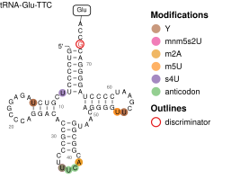

clover facilitates analysis and visualization of nanopore tRNA sequencing data, including differential expression, base-calling error analysis, and modification co-occurrence networks.
clover is under active development. Caveat emptor.
Installation
You can install the development version of clover from GitHub with:
# install.packages("pak")
pak::pak("rnabioco/clover")Features
clover provides a complete toolkit for nanopore tRNA-seq analysis:
- Differential tRNA abundance — Test for expression changes between conditions using DESeq2, with volcano plots and tabular summaries.
- Charging analysis — Measure aminoacylation levels per tRNA and compare across conditions, including joint abundance-charging visualizations.
- Base-calling error profiles — Visualize per-position error rates that reflect RNA modifications, with annotation overlays from MODOMICS.
- Modification heatmaps — Map error rate differences to Sprinzl coordinates for cross-tRNA comparison of modification signatures.
- tRNA secondary structure — Render cloverleaf diagrams annotated with modifications, co-occurrence linkages, and custom highlights (shown above).
- Modification co-occurrence — Compute odds ratios for pairwise modification co-occurrence and visualize as chord diagrams, arc plots, or structure overlays.
clover is very opinionated about file inputs and assumes that data have been processed by the aa-tRNA-seq-pipeline.
Example
clover ships tRNA structure references for major expeirmental systems that enable structure-based tRNA annotation.

See vignette("clover") for a complete walkthrough.
Related work
- aa-tRNA-seq-pipeline is the Snakemake pipeline that generates the data clover analyzes.
- R2easyR visualizes structure probing signals on RNA secondary structure diagrams.
- nanoblot facilitates visualization of nanopore sequencing data, including a “virtual gel” plot.